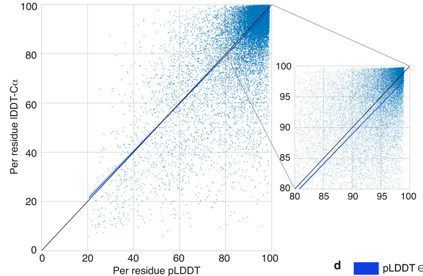
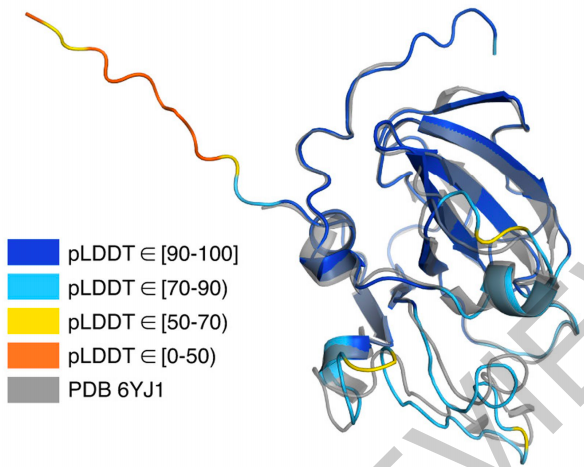

A related blog is: 《阅读DeepMind的Nature论文和源代码：AlphaFold2》
论文见：https://www.nature.com/articles/s41586-021-03828-1_reference.pdf
代码见：https://github.com/deepmind/alphafold
摘要：
蛋白质结构可以提供无价的信息，例如提供生物过程推理、药物发展、靶点诱变的信息。(Protein structures can provide invaluable information, both for reasoning about biological processes and for enabling interventions such as structure-based drug development or targeted mutagenesis. )
人类蛋白质序列17%的residue是通过实验所发现。(After decades of effort, 17% of the total residues in human protein sequences are covered by an experimentally-determined structure.)
我们利用机器学习算法，来发现几乎全部的人类蛋白质结构(95%)。（Here we dramatically expand structural coverage by applying the state-of-the-art machine learning method, AlphaFold2 , at scale to almost the entire human proteome (98.5% of human proteins).）
上述所发现的人类蛋白质结构，虽然是预测的，但是可以视为一个伪标签，也就是形成了一个伪标签数据集。其中，这个数据集58%的residues可以认为是有信心的预测结果，更其中，36%是有高度信心的预测结果。 (The resulting dataset covers 58% of residues with a confident prediction, of which a subset (36% of all residues) have very high confidence.)
最后，他们做了一些案例分析，说明了由高质量的预测得到的伪标签数据集，可以用来产生生物学假设（生物学预言？）。也就是生物学家们，可以用这个假数据集来做科研。我想，这可能是这篇文章的一个精华。(Finally, we provide some case studies illustrating how high-quality predictions may be used to generate biological hypotheses)
正文：
目前为止，人类蛋白质已经有5万种的结构已经被人知道了（如果大家记得上一篇博客的话，应该想起人类已经知道10万种蛋白质的结构了。所以，从这个表述可以得知，人类所知道的10万蛋白质结构里面，有5万种属于人类蛋白质，剩下的属于非人类蛋白质）。这5万种知道结构的人类蛋白质，使智人成为迄今为止蛋白质数据库（PDB数据集）中最具代表性的物种。（over 50,000 human protein structures have now been deposited, making Homo sapiens by far the best represented species in the Protein Data Bank (PDB)）
尽管如此，人类蛋白质中，只有35%在PDB中有，且其中许多结构对应的蛋白质序列很短。而用实验去发现每个序列对应的蛋白质结构又很耗时。因此，蛋白质完全结构的发现，是一个重要的挑战。(As such, full structural coverage of the proteome remains an outstanding challenge).
有一个蛋白质结构预测的比赛叫做CASP，AlphaFold在这个比赛中队名叫做AlphaFold2，使用了一个与以前不同的方法，取得了极高的精度。(AlphaFold was entered in CASP14 under the team name “AlphaFold2”)
AlphaFold取得了极好的精度，即便是待预测的蛋白质在PDB数据库中没有模板，或者PDB中几乎没有相关序列。为什么能做到这个呢？主要方法在上一篇博客中进行了讲解。这里，再强调了一下Multiple Sequence Alignment(MSA)策略，即搜索对齐预处理。这个策略发挥了重要作用。（Good results can often be achieved even for challenging proteins without a template structure in the PDB, or with relatively few related sequences to build a Multiple Sequence Alignment (MSA)2）
文章对UniProt 人类参考蛋白质组（每个基因中的一种代表性序列）进行了结构预测。最长的序列长度为2700 residues。(We predicted structures for the UniProt human reference proteome (one representative sequence per gene), with an upper length limit of 2700 residues6 . The final dataset covers 98.5% of human proteins with a full-chain prediction.)
文章为了使得其生成的数据集具备更有用的科研价值，对所预测的结构也给出的预测的confidence。（AlphaFold produces a per-residue confidence metric called predicted lDDT-Cα (pLDDT) on a scale from 0 to 100. pLDDT estimates how well the prediction would agree with an experimental structure based on the Local Distance Difference Test）
在人类蛋白质方面，有35.7%的residue落在很高confidence区间。58%的residue落在confidence高的区间。（On the human proteome, 35.7% of total residues fall within the highest accuracy band (corresponding to 38.6% of residues for which a prediction was produced; Fig. 1c).）58.0% of total residues are predicted confidently (pLDDT > 70)
（评论：我觉得还有很大的改进空间。毕竟这个confidence并不是很高。所以，我认为这个工作无疑是影响力很大的，但是还没有达到极致的历史地位，可能还没达到诺奖的高度。）
confidence的整体分布情况，如下图所示。

confidence在某个具体预测蛋白结构中的可视化，如下图所示。可以看出来，具体到某个序列，也没有全预测很有信心。也就是说“35.7%的residue落在很高confidence区间”是按residue来统计的。对每个具体结构来说，可能没有一个结构是预测对的（或者可能只有少数结构是整个结构全对的）。这样一来，还是有很大的改进空间。所以，我认为这个工作无疑是影响力很大的，但是还没有达到极致的历史地位，可能还没达到诺奖的高度。

文章也对长的完整序列进行了蛋白质结构预测。文章用了较长一个Section来介绍这个。（Here we process full-length protein chains）
文章的一个精华来了。文章讨论了一些案例分析及它们的insight。它预言(？)了一些生物假设，至于这些假设成不成立，需要科学家们用实验去验证。（We next discuss some case study predictions and the insights they may provide. All predictions presented are de novo, lacking any template with 25% sequence identity or more covering 20% of the sequence. Our discussion concerns biological hypotheses, which would ultimately need to be confirmed by experimental studies.）
案例分析一：葡萄糖-6-磷酸酶 (Glucose-6-phosphatase)
G6Pase-α是一种膜结合酶，可催化葡萄糖合成的最后一步。之前没有相关的蛋白质结构，之前的研究试图表征跨膜拓扑结构和活性位点来研究这个催化效果。（G6Pase is a membrane-bound enzyme that catalyzes the final step in glucose synthesis. No experimental structure exists, but previous studies have attempted to characterize the transmembrane topology and active site）
我们的预测具有非常高的置信度，并给出了一个九螺旋拓扑结构，其中假定的活性位点可通过与内质网表面大致一致的入口隧道进入。我们预测中的带正电残基与先前鉴定的真菌钒氯过氧化物酶中的活性位点同源物密切相关。由于这些酶具有不同的功能，我们探索了我们的预测，以寻找有关底物特异性的线索。 在 G6Pase-α 结合口袋面，与氯过氧化物酶共有的残基相反，我们预测保守的谷氨酸是也存在于我们的 G6Pase-β 预测中，但不存在于氯过氧化物酶中。谷氨酸可以稳定封闭构象的结合口袋，在那里形成带有正电荷残基的盐桥。它也是假定的活性位点中暴露于溶剂最多的残留物，表明可能存在门控功能。据我们所知，这个残基以前没有被讨论过，它说明了可以从高质量结构预测中获得的新机制假设。 (Our prediction has very high confidence and gives a nine-helix topology with the putative active site accessible via an entry tunnel roughly in line with the endoplasmic reticulum surface。Positively-charged residues in our prediction align closely with the previously identified active site homologue in a fungal vanadium chloroperoxidase. Since these enzymes have distinct functions, we probed our prediction for clues about substrate specificity. In the G6Pase-α binding pocket face, opposite the residues shared with the chloroperoxidase, we predict a conserved glutamate that is also present in our G6Pase-β prediction but not the chloroperoxidase. The glutamate could stabilize the binding pocket in a closed conformation, forming salt bridges with positively charged residues there. It is also the most solvent-exposed residue of the putative active site, suggesting a possible gating function. To our knowledge this residue has not been discussed previously and illustrates the novel mechanistic hypotheses that can be obtained from high quality structure predictions. ）
总结：上面这个生物学预言我猜测是说， G6Pase-α 可以催化，根据分析，可能是谷氨酸可以稳定封闭构象的结合口袋，所以可以催化，而G6Pase-β的结构也很相似，可以也可以催化？总之，就是根据新的伪数据集，可以预言生物假设?
二酰基甘油O-酰基转移酶2
三酰甘油合成负责将多余的代谢能量储存为脂肪组织中的脂肪。DGAT2 是催化该途径中最终酰基添加的两种必需酰基转移酶之一，抑制 DGAT2 已被证明可改善肝病小鼠模型的肝功能 。凭借我们高度自信的预测结构，我们着手确定已知抑制剂 PF-06424439 的结合口袋。 我们确定了一个口袋，我们能够在其中停靠抑制剂并观察在反例中没有概括的特定相互作用。DGAT2 有一个进化上不同但生化相似的类似物，二酰基甘油 O-酰基转移酶 1 (DGAT1)。在 DGAT2 的结合口袋中，我们确定了类似于 DGAT1 中提议的催化残基的残基，尽管我们注意到 DGAT2 中附近的 Ser244 可能通过酰基酶中间体。先前使用 DGAT2 的实验工作表明，突变 His163 比将组氨酸突变两个残基具有更强的有害作用。此外，Glu243 和 His163 跨物种是保守的，支持这种假设的催化几何结构。 ( Triacylglycerol synthesis is responsible for storing excess metabolic energy as fat in adipose tissue. DGAT2 is one of two essential acyltransferases catalyzing the final acyl addition in this pathway, and inhibiting DGAT2 has been shown to improve liver function in mouse models of liver disease. With our highly confident predicted structure, we set out to identify the binding pocket for a known inhibitor, PF-06424439. We identified a pocket in which we were able to dock the inhibitor and observe specific interactions that were not recapitulated in a negative example. DGAT2 has an evolutionarily-divergent but biochemically similar analog, diacylglycerol O-acyltransferase 1 (DGAT1). Within DGAT2’s binding pocket, we identified residues analogous to the proposed catalytic residues in DGAT1, although we note that the nearby Ser244 in DGAT2 may present an alternative mechanism via an acyl-enzyme intermediate. Previous experimental work with DGAT2 has shown that mutating His163 has a stronger deleterious effect than mutating a histidine two residues away. Additionally, Glu243 and His163 are conserved across species, supporting this hypothesized catalytic geometry. )
总结：上面这个生物学预言我猜测是说， DGAT2可以催化，而G6Pase-β的结构也很相似，可以也可以催化？总之，就是根据新的伪数据集，可以预言生物假设?
沃尔夫拉明（Wolframin）
Wolframin (UniProt O76024) 是一种定位于 ER 的跨膜蛋白。 WFS1 基因突变与 Wolfram 综合征 1 相关，Wolfram 综合征 1 是一种神经退行性疾病，其特征是早发性糖尿病、逐渐视力和听力丧失以及早逝。鉴于我们对完整预测的信心较低，我们建议识别该结构独有的区域。最近的进化分析提出了 wolframin 的域，我们的预测在很大程度上支持了这一点。一个有趣的区别是将富含半胱氨酸的结构域并入寡核苷酸结合 (OB) 折叠作为特征 β1 链。然后，富含半胱氨酸的区域形成一个带有两个预测二硫键的延伸 L12 环，然后循环回到原型 β2 链。将我们对该区域的预测与使用 TM-align 的现有 PDB 链进行比较，发现 3F1Z 是最相似的已知链。尽管是最相似的链，但 3F1Z 缺乏黑钨中存在的半胱氨酸，后者可能会在 ER 中形成二硫键交联。由于该区域被假设为招募其他蛋白质，因此这些结构见解对于了解其partner可能很重要。 ( Wolframin (UniProt O76024) is a transmembrane protein localized to the ER. Mutations in the WFS1 gene are associated with Wolfram syndrome 1, a neurodegenerative disease characterized by early-onset diabetes, gradual visual and hearing loss, and early death. Given the lower confidence in our full prediction, we proposed identifying regions unique to this structure. A recent evolutionary analysis suggested domains for wolframin, which our prediction largely supports55. An interesting distinction is the incorporation of a cysteine-rich domain to the oligonucleotide binding (OB) fold as the characteristic β1 strand. The cysteine-rich region then forms an extended L12 loop with two predicted disulfide bridges, before looping back to the prototypical β2 strand. Comparing our prediction for this region against existing PDB chains using TM-align identified 3F1Z as the most similar known chain. Despite being the most similar chain, 3F1Z lacks the cysteines present in wolframin, which could form disulfide cross-links in the ER. As this region is hypothesized to recruit other proteins, these structural insights are likely important to understanding its partners. )
总结：WFS1 基因突变与 Wolfram 综合征 1 相关。作者经过分析其预测的蛋白结构，提出了一个假设，蛋白质结构的某些区域与基因突变可能相关。
关于confidence不高的预测：一般而言，预测不准或者预测信心不足，常常被认为是一种耻辱。但是，这篇文章反而自以为豪。首先介绍一个背景：整个人类蛋白质组，总是或有时无序的区域中包含很大比例的residue。无序在真核生物的蛋白质组中很常见，之前的一项工作估计人类蛋白质组中无序残基的百分比为 37-50%。因此，当我们考虑一组涵盖整个蛋白质组的综合预测时，无序将发挥重要作用。
而由于本文章对人类98.5%的蛋白质结构进行了预测，也就是说，这里面的蛋白质，很多地方都本来就是无序的。我的理解是，它们是random的。所以，这些区域根本没有办法预测准确。既然如此，作者想，我们预测信心不足的地方，应该很可能就是本来蛋白质中无序的地方。所以，作者认为，低confidence可以作为无序性的一种度量。
如此一来，预测信心很足，可以用来做生物学假设；预测不准的地方，可以用来做蛋白质无序性的预测。按照作者的观点，怎么都是好。
作者最后对文章进行了总结和讨论。其Discussion较长。
-----------------------------------
大家好，我来自fast lab。我开始不定时公开写作。这些写作主要通过两个渠道公布：一是FAST LAB官方网站；一是印象识堂（微信可访问）。欢迎大家订阅。谢谢！
FAST Lab的官方网址为：
https://wanggrun.github.io/projects/fast
除此外，还可以关注我的小伙伴王广润：
https://wanggrun.github.io/
王广聪：
https://wanggcong.github.io/
石阳：
https://www.linkedin.com/in/%E9%98%B3-%E7%9F%B3-381b521a4/
有时候这些网站打不开，请耐心多点几次。
多谢大家关注。
返回博客目录Return to all Blogs
返回主页Return to homepage